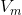
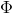
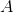
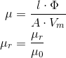
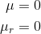

PermeabilityDetermines permeability from flux and magnetic potential difference |
Information
This information is part of the Modelica Standard Library maintained by the Modelica Association.
This model determines the absolute and relative permeability from two real inputs:
- RMS magnetic potential difference, 
- RMS magnetic flux, 
In order to calculate the permeabilities, the area of cross section, , and the geometric length, , of the flux path have to be take into account
- 
In case that the magnetic potential difference is close to zero, permeabilities yield:
- 
Parameters (2)
Connectors (4)
| Phi |
Type: RealInput Description: Magnetic flux |
|
|---|---|---|
| V_m |
Type: RealInput Description: Magnetic potential difference |
|
| mu |
Type: RealOutput Description: Absolute permeability |
|
| mur |
Type: RealOutput Description: Relative Permeability |
Used in Components (1)
|
FundamentalWavePermabilitySensor Modelica.Magnetic.QuasiStatic.FluxTubes.Sensors.Transient
Sensor of fundamental wave permeability |